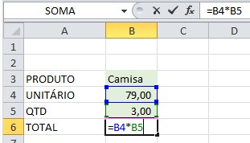
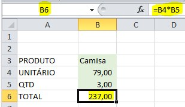
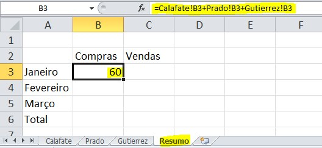

As planilhas são feitas para criar controles, quase sempre numéricos e o motor disso são as fórmulas. Elas seguem as mesmas regras da escola primária, com prioridade das operações e parênteses para definir a ordem dos cálculos, então quem sabe fazer conta já sabe a base.
Baixe a planilha do exercício: modelo-excel-formulas-basicas.xlsx. Ela traz os exemplos deste capítulo com as fórmulas funcionando: altere os valores azuis e veja o resultado. Traz o cálculo do total, a ordem das operações e as três lojas consolidadas na planilha Resumo.
Seu primeiro cálculo
Vamos montar um modelo simples com o nome de um produto, o preço unitário e a quantidade vendida, para calcular o total. Nas células A3 a A6 ficam os rótulos PRODUTO, UNITÁRIO, QTD e TOTAL e nas células B3 a B5 ficam os valores. A formatação com separador de milhares melhora a leitura e pode ser aplicada livremente pela barra de ferramentas.

Toda fórmula no Excel começa com o sinal de igual. Quando o primeiro caractere de uma célula é "=", o Excel entende que deve calcular e não apenas guardar um texto, então o total vai na célula B6 assim:
=B4*B5

Os parênteses organizam a ordem dos cálculos. Na fórmula abaixo o Excel multiplica B4 por B5, depois divide B5 por B4 e, por fim, soma os dois resultados, como em qualquer equação.
=(B4*B5)+(B5/B4)
Uma fórmula pode ter até 16.384 caracteres e pode apontar para células da própria planilha ou de outras, na mesma pasta de trabalho ou até em outras pastas.
Fórmulas tridimensionais
Quando uma fórmula busca valores em planilhas diferentes ela ganha profundidade, ou seja, uma terceira dimensão além das linhas e colunas. Imagine uma rede com três lojas, cada uma com sua planilha de compras e vendas e uma quarta planilha chamada Resumo com a mesma estrutura, que consolida as outras.
O primeiro cuidado é dar nomes que façam sentido às planilhas, no exemplo os bairros Calafate, Prado e Gutierrez, para que ninguém precise adivinhar o que há em cada uma. Para trazer as compras de janeiro das três lojas na planilha Resumo, a fórmula soma a mesma célula de cada loja:
=Calafate!B3+Prado!B3+Gutierrez!B3

Como é uma fórmula, qualquer compra alterada em uma das lojas se reflete sozinha no Resumo, sem retrabalho e sem risco de esquecer de atualizar.
Veja também. Se algum termo aqui soou estranho, como referência de célula ou pasta de trabalho, volte ao vocabulário básico do Excel. Depois das quatro operações, as funções essenciais e a função SE são o passo natural.
Comentários
Dúvida, discordância ou outro ponto de vista? Escreva aqui e eu respondo.